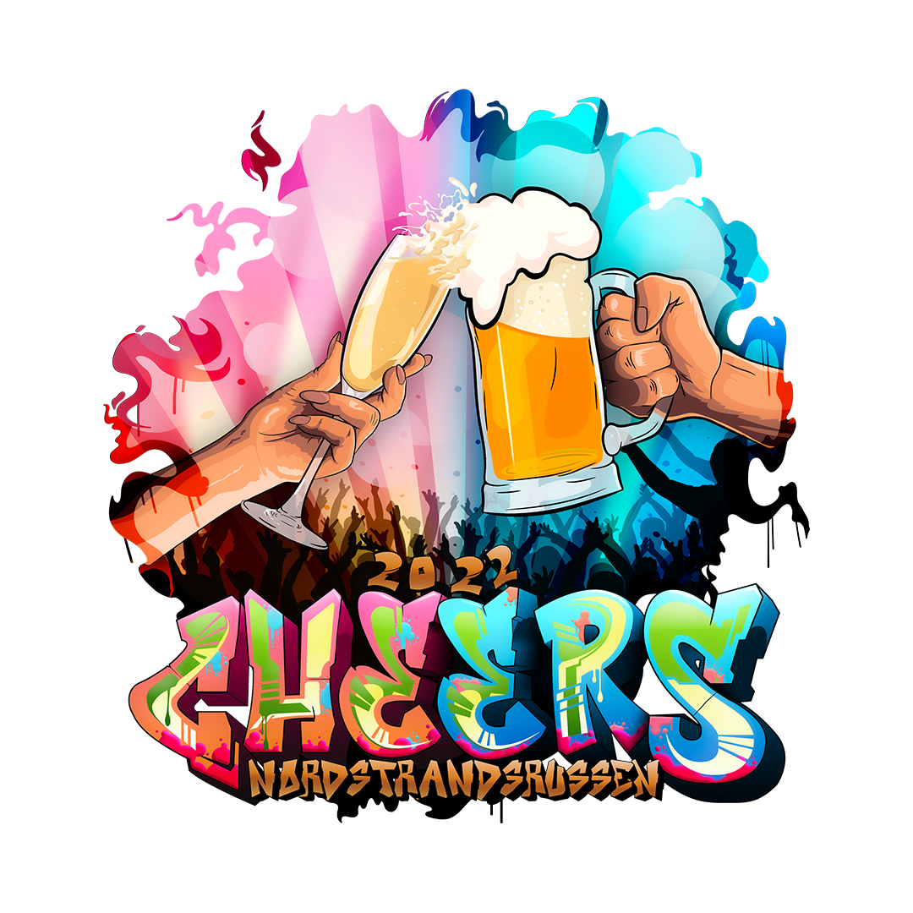
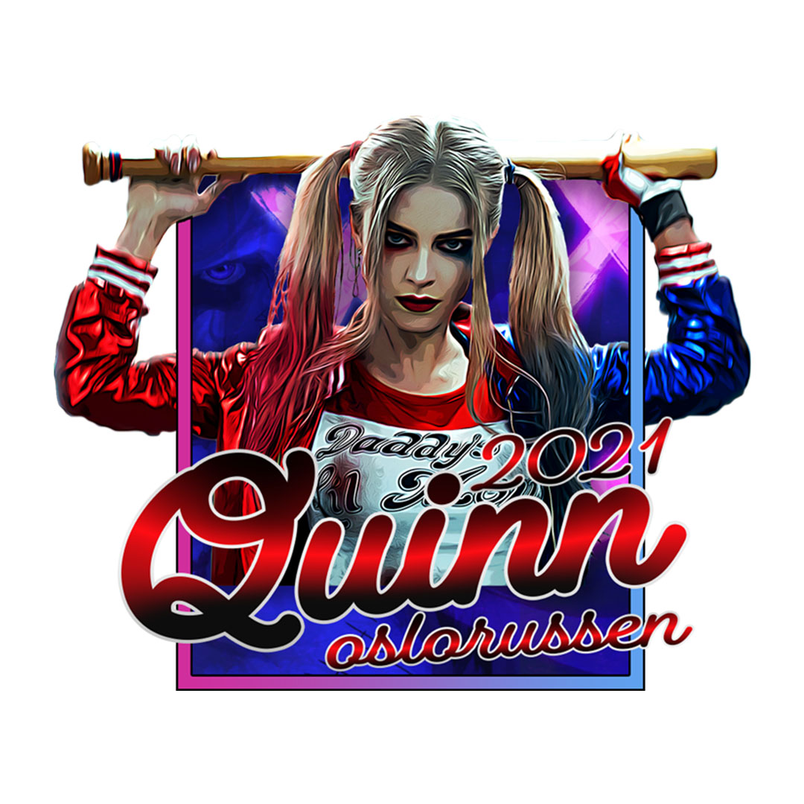
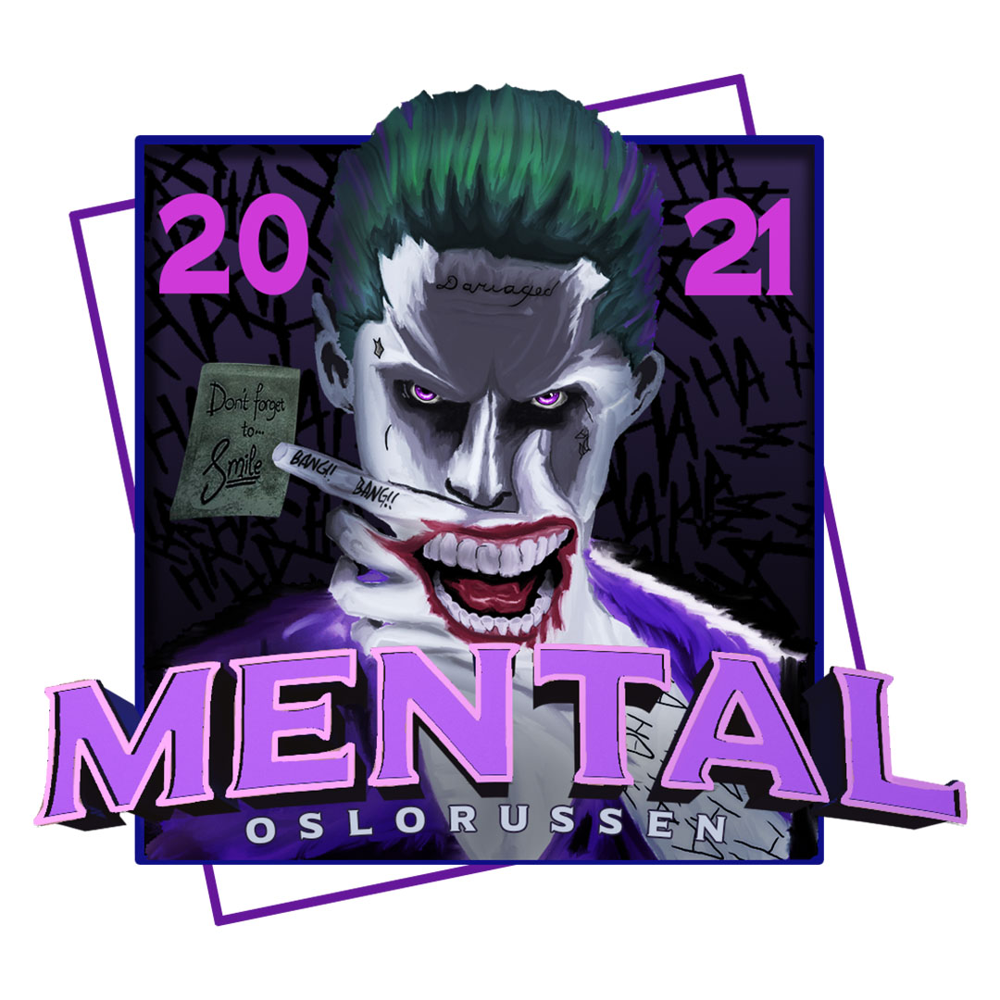
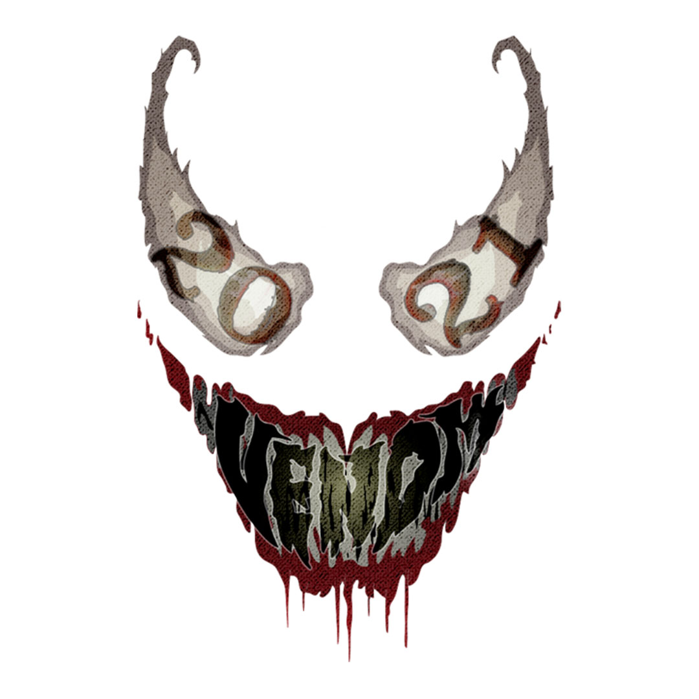

Russelogoer
Kreative logo-design med ett enkelt mål.
Russelogoer er en egen kunstform. Her handler det ikke om forsiktige linjer og corporate minimalisme – men om attitude. En god russelogo skal rope høyere enn resten av gata, skille seg ut, og fange den selvsikkerheten og energien som russetiden representerer.
Når jeg designer russelogoer starter jeg alltid med idéen eller ønsket fra gruppen. Deretter utvikler jeg flere forslag som presenteres for dem – før vi sammen finner retningen som treffer best. Prosessen tar som regel én til to måneder, med tett dialog underveis.
Jeg foretrekker å ha én kontaktperson i gruppen. Det gir en tydelig linje i kommunikasjonen, sørger for at prosessen flyter effektivt, og at sluttresultatet blir akkurat slik det skal: unikt, kraftfullt og karismatisk.
Utvalgte russelogoer
Klikk på en logo for å se den i full størrelse.

Bel-Air
Logo design + genser design + lanseringsvideo
Se hele prosjektet{kind=link}

Cheers
Logo design
{kind=link}

Quinn
Logo design

Ocean's 12
Logo design
{kind=link}

Mental
Logo design

The search
Logo design
{kind=link}

Venom
Logo design

Glow up
Logo design